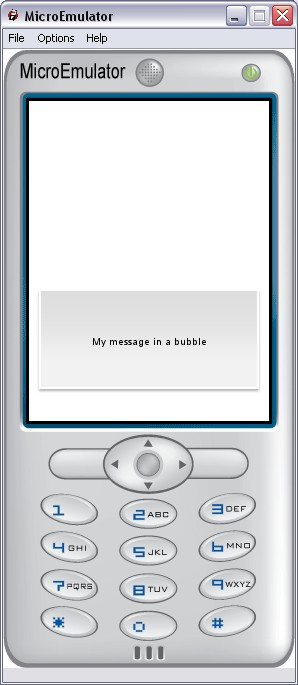

Bubble prototype

Display a short message with a bubble.
When the message is modified, the bubble is shown.
Data fields
- SFString message - Message information. If the message is modified, the bubble apears
Style fields
- MFString images - Image used to display a background
- MFString style - Style for this prototype. Default: "Bubble"
- SFVec2f screenSize - Size of the screen where the application is displayed
Warning:
Define style is required (we can use the default style - see
Style node).
Exposed Fields
- SFTime duration - Duration of display
- SFTime startTime - Force display if startTime is set to now (with async = TRUE)